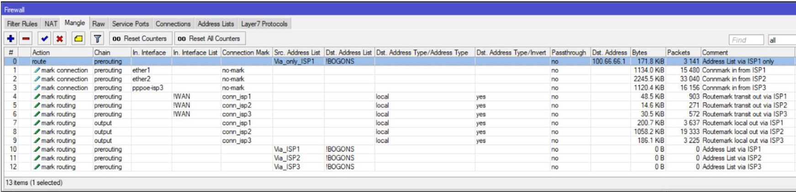

Мультиван и маршрутизация на Mikrotik RouterOS
Взяться за статью, помимо тщеславия, побудила удручающая частота возникновения вопросов по этой теме в профильных группах русскоязычного телеграмм-сообщества. Статья ориентирована на начинающих администраторов Mikrotik RouterOS (далее ROS). В ней рассматривается только мультиван, с акцентом на маршрутизацию. Бонусом присутствуют минимально достаточные настройки для обеспечения безопасной и удобной работы. Те, кто ищет раскрытия тем очередей, балансировки нагрузки, вланов, бриджей, многоступенчатого глубокого анализа состояния канала и тому подобного — могут не тратить времени и сил на прочтение.
Исходные данные
В качестве подопытного, выбран пятипортовый маршрутизатор Mikrotik с ROS версии 6.45.3. Он будет маршрутизировать трафик между двумя локальными сетями (LAN1 и LAN2) и тремя провайдерами (ISP1, ISP2, ISP3). Канал к ISP1 имеет статический “серый” адрес, ISP2 — “белый”, получаемый по DHCP, ISP3 — “белый” с PPPoE авторизацией. Схема подключения представлена на рисунке:
Задача настроить роутер “МТК” на основе схемы так, чтобы:
Замечание. Настраивать роутер будем “с чистого листа”, дабы гарантировать отсутствие сюрпризов в меняющихся от версии к версии стартовых конфигурациях “из коробки”. В качестве инструмента настройки выбран Winbox, где будут наглядно отображаться изменения. Сами настройки будут задаваться командами в терминале Winbox. Физическое подключение для настройки осуществляется прямым соединением с интерфейсом Ether5.
Немного рассуждений о том, что такое мультиван, проблема ли это или хитрые умники вокруг плетут сети заговоров
Пытливый и внимательный админ, самостоятельно настраивая такую или подобную схему, вдруг неожиданно осознает, что оно и так нормально работает. Да-да, без этих ваших пользовательских таблиц маршрутизации и прочих route rules, коими пестрят большинство статей на эту тему. Проверим?
Адресацию на интерфейсах и шлюзы по умолчанию настроить можем? Да:
На ISP1 прописали адрес и шлюз с distance=2 и check-gateway=ping.
На ISP2 настройка dhcp клиента по умолчанию — соответственно distance будет равен единице.
На ISP3 в настройках pppoe клиента при add-default-route=yes ставим default-route-distance=3.
NAT на выход прописать не забываем:
/ip firewall nat add action=masquerade chain=srcnat out-interface-list=WAN
По итогу, у пользователей локалок котики весело грузятся через основного провайдера ISP2 и есть резервирование канала при помощи механизма check gateway См. примечание 1
Пункт 1 задачи реализован. Где же мультиван со своими метками? Нет…
Дальше. Нужно выпустить конкретных клиентов из LAN через ISP1:
/ip firewall mangle add action=route chain=prerouting dst-address-list=!BOGONS \
passthrough=yes route-dst=100.66.66.1 src-address-list=Via_ISP1
/ip firewall mangle add action=route chain=prerouting dst-address-list=!BOGONS \
passthrough=no route-dst=100.66.66.1 src-address=192.168.88.0/24
Пункты 2 и 3 задачи реализованы. Метки, марки, route rules, где вы?!
Нужно дать доступ к любимому OpenVPN серверу с адресом 172.17.17.17 для клиентов из Интернет? Пожалуйста:
/ip cloud set ddns-enabled=yes
Клиентам в качестве пира даем результат вывода: “:put [ip cloud get dns-name]”
Прописываем проброс порта из инета:
/ip firewall nat add action=dst-nat chain=dstnat dst-port=1194 \
in-interface-list=WAN protocol=udp to-addresses=172.17.17.17
Пункт 4 готов.
Настраиваем фаервол и прочую безопасность для пункта 5, параллельно радуемся тому, что у пользователей уже все работает и тянемся к емкости с любимым напитком…
А! Туннели же еще забыли.
l2tp-клиент, настроенный по нагугленной статье, до любимого голландского VDS поднялся? Да.
l2tp-сервер с IPsec поднялся и клиенты по ДНС-имени из IP Cloud(см выше.) цепляются? Да.
Откинувшись на спинку стула, прихлебывая напиток, лениво рассматриваем пункты 6 и 7 задачи. Думаем — а оно нам надо? Все ж и так работает (с)… Так вот если оно таки не надо, то на этом все. Мультиван реализован.
Что такое мультиван? Это подключение нескольких каналов Интернет к одному роутеру.
Дальше статью можно не читать, поскольку что там кроме выпендрежа сомнительной применимости может быть?
С теми, кто остался, кто заинтересован пунктами 6 и 7 задачи, а также ощущает зуд перфекционизма, погружаемся глубже.
Важнейшей задачей реализации мультиван является корректная маршрутизация трафика. А именно: независимо от того, в какой (или в какие)См. примечание 3 канал(ы) провайдера смотрит маршрут по умолчанию на нашем роутере, он должен возвращать ответ именно в тот канал, с которого пакет пришел. Задача понятна. Проблема-то где? Ведь в простой локальной сети задача та же, но никто дополнительными настройками не заморачивается и беды не ощущает. Отличие в том, что любой маршрутизируемый узел в Интернет доступен через каждый из наших каналов, а не через строго конкретный, как в простой локалке. А “беда” заключается в том, что если к нам пришел запрос на IP-адрес ISP3, то в нашем случае ответ уйдет через канал ISP2, поскольку туда направлен шлюз по умолчанию. Уйдет и будет отброшен провайдером, как некорректный. С проблемой определились. Как ее решать?
Решение разделим на три этапа:
Замечание. Три разных типа подключения к ISP выбраны специально для того, чтобы показать — ничего неразрешимого в настройке мультиван с динамическими адресами нет и продемонстрировать один из вариантов решения.
Важно! Для переключения каналов по алгоритму заданному при помощи стоимости маршрутов distance используется механизм check gateway. См. примечание 1
Скрипты, приведенные в статье, к резервированию каналов отношения не имеют.
1. Предварительная настройка
1.1. Очищаем конфигурацию роутера командой:
/system reset-configuration skip-backup=yes no-defaults=yes
соглашаемся с “Dangerous! Reset anyway? [y/N]:” и, после перезагрузки, подключаемся Winbox-ом по MAC. На данном этапе конфигурация и база пользователей очищены.
1.2. Создаем нового пользователя:
/user add group=full name=knight password=ultrasecret comment=”Not horse”
логинимся под ним и удаляем дефолтного:
/user remove admin
Замечание. Именно удаление а не отключение дефолтного пользователя автор считает более безопасным и рекомендует к применению.
1.3. Создаем базовые interface lists для удобства оперирования в файерволле, настройках discovery и прочих MAC серверах:
/interface list add name=WAN comment="For Internet"
/interface list add name=LAN comment="For Local Area"
Подписываем комментариями интерфейсы
/interface ethernet set ether1 comment="to ISP1"
/interface ethernet set ether2 comment="to ISP2"
/interface ethernet set ether3 comment="to ISP3"
/interface ethernet set ether4 comment="to LAN1"
/interface ethernet set ether5 comment="to LAN2"
и заполняем interface lists:
/interface list member add interface=ether1 list=WAN comment=ISP1
/interface list member add interface=ether2 list=WAN comment=ISP2
/interface list member add interface=ether3 list=WAN comment="to ISP3"
/interface list member add interface=ether4 list=LAN comment="LAN1"
/interface list member add interface=ether5 list=LAN comment="LAN2"
Замечание. Писать понятные комментарии стоит потраченного на это времени плюс сильно облегчает траблшутинг и понимание конфигурации.
Автор считает необходимым, в целях безопасности, добавить в interface list “WAN” интерфейс ether3, не смотря на то, что по нему не будет ходить протокол ip.
Не забываем, что после того, как на ether3 будет поднят интерфейс PPP, его тоже нужно будет добавить в interface list “WAN”
1.4. Скрываем роутер от обнаружения соседства и управления из сетей провайдеров по МАС:
/ip neighbor discovery-settings set discover-interface-list=!WAN
/tool mac-server set allowed-interface-list=LAN
/tool mac-server mac-winbox set allowed-interface-list=LAN
1.5. Создаем минимально достаточный набор правил фильтра файрволла для защиты роутера:
/ip firewall filter add action=accept chain=input \
comment="Related Established Untracked Allow" \
connection-state=established,related,untracked
(правило обеспечивает разрешение для установившихся и родственных соединений, которые инициированы как из подключенных сетей, так и самим роутером)
/ip firewall filter add action=accept chain=input \
comment="ICMP from ALL" protocol=icmp
(пинг и не только пинг. Разрешен весь icmp на вход. Весьма полезно для нахождения проблем с MTU)
/ip firewall filter add action=drop chain=input comment="All other WAN Drop" \
in-interface-list=WAN
(закрывающее цепочку input правило запрещает все остальное, что прилетает из Интернет)
/ip firewall filter add action=accept chain=forward \
comment="Established, Related, Untracked allow" \
connection-state=established,related,untracked
(правило разрешает установившиеся и родственные соединения, которые проходят сквозь роутер)
/ip firewall filter add action=drop chain=forward comment="Invalid drop" \
connection-state=invalid
(правило сбрасывает соединения, с connection-state=invalid, проходящие сквозь роутер. Оно настоятельно рекомендовано Mikrotik, но в некоторых редких ситуациях может вызывать блокировку полезного трафика)
/ip firewall filter add action=drop chain=forward \
comment="Drop all from WAN not DSTNATed" connection-nat-state=!dstnat \
connection-state=new in-interface-list=WAN
(правило запрещает проходить сквозь роутер пакетам, которые идут из Интернет и не прошли процедуру dstnat. Это убережет локальные сети от злоумышленников, которые, находясь в одном широковещательном домене с нашими внешними сетями, пропишут в качестве шлюза наши внешние IP и, таким образом, попытаются “исследовать” наши локальные сети. )
Замечание. Примем за условие, что сети LAN1 и LAN2 являются доверенными и трафик между ними и с них не фильтруется.
1.6. Создаем список с перечнем не маршрутизируемых сетей:
/ip firewall address-list
add address=0.0.0.0/8 comment="\"This\" Network" list=BOGONS
add address=10.0.0.0/8 comment="Private-Use Networks" list=BOGONS
add address=100.64.0.0/10 comment="Shared Address Space. RFC 6598" list=BOGONS
add address=127.0.0.0/8 comment=Loopback list=BOGONS
add address=169.254.0.0/16 comment="Link Local" list=BOGONS
add address=172.16.0.0/12 comment="Private-Use Networks" list=BOGONS
add address=192.0.0.0/24 comment="IETF Protocol Assignments" list=BOGONS
add address=192.0.2.0/24 comment=TEST-NET-1 list=BOGONS
add address=192.168.0.0/16 comment="Private-Use Networks" list=BOGONS
add address=198.18.0.0/15 comment="Network Interconnect Device Benchmark Testing"\
list=BOGONS
add address=198.51.100.0/24 comment=TEST-NET-2 list=BOGONS
add address=203.0.113.0/24 comment=TEST-NET-3 list=BOGONS
add address=224.0.0.0/4 comment=Multicast list=BOGONS
add address=192.88.99.0/24 comment="6to4 Relay Anycast" list=BOGONS
add address=240.0.0.0/4 comment="Reserved for Future Use" list=BOGONS
add address=255.255.255.255 comment="Limited Broadcast" list=BOGONS
(Это список адресов и сетей, которые не маршрутизируются в Интернет и, соответственно, мы тоже будем этому следовать. )
Замечание. Список может изменяться, поэтому советую периодически проверять актуальность.
1.7. Настраиваем DNS для самого роутера:
/ip dns set servers=1.1.1.1,8.8.8.8
Замечание. В текущей версии ROS динамические серверы имеют приоритет перед статически заданными. Запрос на разрешение имени отсылается первому серверу по порядку следования в списке. На следующий сервер переход осуществляется при недоступности текущего. Таймаут большой — более 5 сек. Возврат обратно, при возобновлении работы “упавшего сервера”, автоматически не происходит. С учетом этого алгоритма и наличия мультивана, автор рекомендует не использовать серверы, выдаваемые провайдерами.
1.8. Настраиваем локальную сеть.
1.8.1. Конфигурируем статические IP-адреса на интерфейсах локальных сетей:
/ip address add interface=ether4 address=192.168.88.254/24 comment="LAN1 IP"
/ip address add interface=ether5 address=172.16.1.0/23 comment="LAN2 IP"
1.8.2. Задаем правила маршрутов к нашим локальным сетям через главную таблицу маршрутизации:
/ip route rule add dst-address=192.168.88.0/24 table=main comment=”to LAN1”
/ip route rule add dst-address=172.16.0.0/23 table=main comment="to LAN2"
Замечание. Это один из простых и быстрых способов получить доступ к адресам локальных сетей с соурсами внешних IP-адресов интерфейсов роутера, через которые не идет маршрут по умолчанию.
1.8.3. Включаем Hairpin NAT для LAN1 и LAN2:
/ip firewall nat add action=src-nat chain=srcnat comment="Hairpin to LAN1" \
out-interface=ether4 src-address=192.168.88.0/24 to-addresses=192.168.88.254
/ip firewall nat add action=src-nat chain=srcnat comment="Hairpin to LAN2" \
out-interface=ether5 src-address=172.16.0.0/23 to-addresses=172.16.1.0
Замечание. Это позволяет получать доступ через внешний IP на свои ресурсы (dstnat), находясь внутри сети.
2. Собственно, реализация того самого корректного мультиван
Для решения задачи “отвечать туда откуда спросили” будем использовать два инструмента ROS: connection mark и routing mark. Connection mark позволяет пометить нужное соединение и в дальнейшем работать с этой меткой, как условием для применения routing mark. А уже с routing mark возможно работать в ip route и route rules. С инструментами разобрались, теперь кужно решить какие соединения метить — раз, где именно метить — два.
С первым все просто — мы должны пометить все соединения, которые приходят на роутер из Интернет по соответствующему каналу. В нашем случае это будут три метки (по количеству каналов): “conn_isp1”, “conn_isp2” и “conn_isp3”.
Нюанс со вторым заключается в том, что входящие соединения будут двух видов: транзитные и те, которые предназначены самому роутеру. Механизм connection mark работает в таблице mangle. Рассмотрим движение пакета на упрощенной диаграмме, любезно собранной специалистами ресурса mikrotik-trainings.com (не реклама):
Следуя по стрелкам, мы видим, что пакет, приходящий в “input interface”, проходит по цепочке “Prerouting” и только потом разделяется на транзитный и локальный в блоке “Routing Decision”. Поэтому, для убиения двух зайцев, задействуем Connection Mark в таблице Mangle Prerouting цепочки Prerouting.
Замечание. В ROS метки “Routing mark” указаны в разделе Ip/Routes/Rules как “Table”, а в остальных разделах, как “Routing Mark”. Сие может внести некую путаницу в понимание, но, по сути, это одно и то же, и является аналогом rt_tables в iproute2 на linux.
2.1. Метим входящие соединения от каждого из провайдеров:
/ip firewall mangle add action=mark-connection chain=prerouting \
comment="Connmark in from ISP1" connection-mark=no-mark in-interface=ether1 \
new-connection-mark=conn_isp1 passthrough=no
/ip firewall mangle add action=mark-connection chain=prerouting \
comment="Connmark in from ISP2" connection-mark=no-mark in-interface=ether2 \
new-connection-mark=conn_isp2 passthrough=no
/ip firewall mangle add action=mark-connection chain=prerouting \
comment="Connmark in from ISP3" connection-mark=no-mark in-interface=pppoe-isp3 \
new-connection-mark=conn_isp3 passthrough=no
Замечание. Для того, чтобы не метить уже помеченные соединения я использую условие connection-mark=no-mark вместо connection-state=new потому, что считаю это более корректным, как и отказ от drop invalid соединений в фильтре input.
passthrough=no — потому, что в этом способе реализации перемаркировка исключена и для ускорения можно прервать перебор правил после первого же совпадения.
Следует иметь ввиду, что мы пока никак не вмешиваемся в маршрутизацию. Сейчас идут только этапы подготовки. Следующим этапом реализации будет обработка транзитного трафика, который возвращается по установившемуся соединению от адресата в локальной сети. Т.е. тех пакетов, которые (см диаграмму) прошли через роутер по пути:
“Input Interface”=>”Prerouting”=>”Routing Decision”=>”Forward”=>”Post Routing”=>”Output Interface” и попали к своему адресату в локальной сети.
Важно! В ROS нет логического деления на внешний и внутренний интерфейсы. Если проследить путь движения ответного пакета по приведенной диаграмме, то он пройдет по тому же логическому пути, что и запрос:
“Input Interface”=>”Prerouting”=>”Routing Decision”=>”Forward”=>”Post Routing”=>”Output Interface” просто для запроса “Input Interface” был интерфейс ISP, а для ответа — LAN
2.2. Направляем ответный транзитный трафик по соответствующим таблицам маршрутизации:
/ip firewall mangle add action=mark-routing chain=prerouting \
comment="Routemark transit out via ISP1" connection-mark=conn_isp1 \
dst-address-type=!local in-interface-list=!WAN new-routing-mark=to_isp1 passthrough=no
/ip firewall mangle add action=mark-routing chain=prerouting \
comment="Routemark transit out via ISP2" connection-mark=conn_isp2 \
dst-address-type=!local in-interface-list=!WAN new-routing-mark=to_isp2 passthrough=no
/ip firewall mangle add action=mark-routing chain=prerouting \
comment="Routemark transit out via ISP3" connection-mark=conn_isp3 \
dst-address-type=!local in-interface-list=!WAN new-routing-mark=to_isp3 passthrough=no
Замечание. in-interface-list=!WAN — мы работаем только с трафиком из локальной сети и dst-address-type=!local не имеющим адрес назначения адреса интерфейсов самого роутера.
То же самое для локальных пакетов, которые пришли на роутер по пути:
“Input Interface”=>”Prerouting”=>”Routing Decision”=>”Input”=>”Local Process”
Важно! Ответ пойдет по следующему пути:
”Local Process”=>”Routing Decision”=>”Output”=>”Post Routing”=>”Output Interface”
2.3. Направляем ответный локальный трафик по соответствующим таблицам маршрутизации:
/ip firewall mangle add action=mark-routing chain=output \
comment="Routemark local out via ISP1" connection-mark=conn_isp1 \
dst-address-type=!local new-routing-mark=to_isp1 passthrough=no
/ip firewall mangle add action=mark-routing chain=output \
comment="Routemark local out via ISP2" connection-mark=conn_isp2 \
dst-address-type=!local new-routing-mark=to_isp2 passthrough=no
/ip firewall mangle add action=mark-routing chain=output \
comment="Routemark local out via ISP3" connection-mark=conn_isp3 \
dst-address-type=!local new-routing-mark=to_isp3 passthrough=no
На этом этапе задачу подготовки к отправке ответа в тот канал Интернет, с которого пришел запрос можно считать решенной. Все помечено, промаркировано и готово маршрутизироваться.
Отличным “побочным” эффектом такой настройки является возможность работы проброса портов DSNAT с обоих (ISP2, ISP3) провайдеров одновременно. Не на всех, так как на ISP1 у нас не маршрутизируемый адрес. Этот эффект важен, например, для почтового сервера с двумя MХ, которые смотрят в разные каналы Интернет.
Для устранения нюансов работы локальных сетей с внешними IP роутера используем решения из пп. 1.8.2 и 3.1.2.6.
Кроме того, можно задействовать инструмент с маркировками и для решения пункта 3 задачи. Реализуем так:
2.4. Направляем трафик от локальных клиентов из списков маршрутизации в соответствующие таблицы:
/ip firewall mangle add action=mark-routing chain=prerouting \
comment="Address List via ISP1" dst-address-list=!BOGONS new-routing-mark=to_isp1 \
passthrough=no src-address-list=Via_ISP1
/ip firewall mangle add action=mark-routing chain=prerouting \
comment="Address List via ISP2" dst-address-list=!BOGONS new-routing-mark=to_isp2 \
passthrough=no src-address-list=Via_ISP2
/ip firewall mangle add action=mark-routing chain=prerouting \
comment="Address List via ISP3" dst-address-list=!BOGONS new-routing-mark=to_isp3 \
passthrough=no src-address-list=Via_ISP3
По итогу, это выглядит приблизительно так:

3. Настраиваем подключение к ISP и задействуем маршрутизацию по маркам
3.1. Настраиваем подключение к ISP1:
3.1.1. Конфигурируем статический IP-адрес:
/ip address add interface=ether1 address=100.66.66.2/30 comment="ISP1 IP"
3.1.2. Настраиваем статическую маршрутизацию:
3.1.2.1. Добавляем “аварийный” маршрут по умолчанию:
/ip route add comment="Emergency route" distance=254 type=blackhole
Замечание. Этот маршрут позволяет трафику от локальных процессов проходить этап Route Decision независимо от состояния каналов любого из провайдеров. Нюанс исходящего локального трафика заключается в том, что чтобы пакет хоть куда-то двинулся, в основной таблице маршрутизации должен присутствовать активный маршрут до шлюза по умолчанию. Если его нет, то пакет просто будет уничтожен.
В качестве расширения инструмента check gateway для более глубокого анализа состояния канала предлагаю использовать метод рекурсивных маршрутов. Суть метода заключается в том, что мы указываем маршрутизатору искать путь к своему шлюзу не напрямую, а через промежуточный шлюз. В качестве таких “проверочных” шлюзов будут выбраны 4.2.2.1, 4.2.2.2 и 4.2.2.3 соответственно для ISP1, ISP2 и ISP3.
3.1.2.2. Маршрут до “проверочного” адреса:
/ip route add check-gateway=ping comment="For recursion via ISP1" \
distance=1 dst-address=4.2.2.1 gateway=100.66.66.1 scope=10
Замечание. Значение scope понижаем до дефолтного в ROS target scope, чтобы использовать в дальнейшем 4.2.2.1 в качестве рекурсивного шлюза. Подчеркиваю: scope маршрута до “проверочного” адреса должно быть меньше или равно target scope того маршрута, который будет ссылаться на проверочный.
3.1.2.3. Рекурсивный маршрут по умолчанию для трафика без routing mark:
/ip route add check-gateway=ping comment="Unmarked via ISP1" \
distance=2 gateway=4.2.2.1
Замечание. Значение distance=2 используется потому, что ISP1 по условиям задачи заявлен как первый резервный.
3.1.2.4. Рекурсивный маршрут по умолчанию для трафика c routing mark “to_isp1”:
/ip route add comment="Marked via ISP1 Main" distance=1 gateway=4.2.2.1 \
routing-mark=to_isp1
Замечание. Собственно, здесь мы наконец-то начинаем пользоваться плодами той подготовительной работы, что была проведена в пункте 2.
По этому маршруту весь трафик, который имеет mark route “to_isp1”, будет направлен на шлюз первого провайдера не зависимо от того, какой в данный момент активен шлюз по умолчанию для таблицы main.
3.1.2.5. Первый резервный рекурсивный маршрут по умолчанию для маркированного трафика провайдеров ISP2 и ISP3:
/ip route add comment="Marked via ISP2 Backup1" distance=2 gateway=4.2.2.1 \
routing-mark=to_isp2
/ip route add comment="Marked via ISP3 Backup1" distance=2 gateway=4.2.2.1 \
routing-mark=to_isp3
Замечание. Эти маршруты нужны, в том числе, для резервирования трафика с локальных сетей, которые состоят членами address list “to_isp*”’
3.1.2.6. Прописываем маршрут для локального трафика роутера в интернет через ISP1:
/ip route rule add comment="From ISP1 IP to Inet" src-address=100.66.66.2 table=to_isp1
Замечание. В сочетании с правилами из пункта 1.8.2, обеспечивается выход в нужный канал с заданным соурсом. Это является критичным для построения туннелей, в которых задается IP-адрес локальной стороны(EoIP, IP-IP, GRE). Поскольку правила в ip route rules выполняются сверху вниз, до первого совпадения условий, то данное правило должно быть после правил из пункта 1.8.2.
3.1.3. Прописываем правило NAT для исходящего трафика:
/ip firewall nat add action=src-nat chain=srcnat comment="NAT via ISP1" \
ipsec-policy=out,none out-interface=ether1 to-addresses=100.66.66.2
Замечание. NATим все выходящее, кроме того, что попадает в политики IPsec. Я стараюсь не использовать action=masquerade без крайней необходимости. Оно работает медленнее и более ресурсоемко, чем src-nat, поскольку для каждого нового соединения вычисляет адрес для NAT.
3.1.4. Отправляем клиентов из списка, которым запрещен выход через остальных провайдеров сразу на шлюз провайдера ISP1.
/ip firewall mangle add action=route chain=prerouting \
comment="Address List via ISP1 only" dst-address-list=!BOGONS passthrough=no \
route-dst=100.66.66.1 src-address-list=Via_only_ISP1 place-before=0
Замечание. action=route имеет более высокий приоритет и применяется раньше остальных правил маршрутизации.
place-before=0 — помещает наше правило первым в списке.
3.2. Настраиваем подключение к ISP2.
Поскольку провайдер ISP2 настройки нам выдает по DHCP, разумно необходимые изменения делать скриптом, который стартует при срабатывании DHCP клиента:
/ip dhcp-client
add add-default-route=no disabled=no interface=ether2 script=":if (\$bound=1) do={\r\
\n /ip route add check-gateway=ping comment=\"For recursion via ISP2\" \
distance=1 dst-address=4.2.2.2/32 gateway=\$\"gateway-address\" scope=10\r\
\n /ip route add check-gateway=ping comment=\"Unmarked via ISP2\" \
distance=1 gateway=4.2.2.2;\r\
\n /ip route add comment=\"Marked via ISP2 Main\" distance=1 gateway=4.2.2.2 \
routing-mark=to_isp2;\r\
\n /ip route add comment=\"Marked via ISP1 Backup1\" distance=2 \
gateway=4.2.2.2 routing-mark=to_isp1;\r\
\n /ip route add comment=\"Marked via ISP3 Backup2\" distance=3 \
gateway=4.2.2.2 routing-mark=to_isp3;\r\
\n /ip firewall nat add action=src-nat chain=srcnat ipsec-policy=out,none \
out-interface=\$\"interface\" to-addresses=\$\"lease-address\" \
comment=\"NAT via ISP2\" place-before=1;\r\
\n if ([/ip route rule find comment=\"From ISP2 IP to Inet\"] =\"\") do={\r\
\n /ip route rule add comment=\"From ISP2 IP to Inet\" \
src-address=\$\"lease-address\" table=to_isp2 \r\
\n } else={\r\
\n /ip route rule set [find comment=\"From ISP2 IP to Inet\"] disabled=no \
src-address=\$\"lease-address\"\r\
\n } \r\
\n} else={\r\
\n /ip firewall nat remove [find comment=\"NAT via ISP2\"];\r\
\n /ip route remove [find comment=\"For recursion via ISP2\"];\r\
\n /ip route remove [find comment=\"Unmarked via ISP2\"];\r\
\n /ip route remove [find comment=\"Marked via ISP2 Main\"];\r\
\n /ip route remove [find comment=\"Marked via ISP1 Backup1\"];\r\
\n /ip route remove [find comment=\"Marked via ISP3 Backup2\"];\r\
\n /ip route rule set [find comment=\"From ISP2 IP to Inet\"] disabled=yes\r\
\n}\r\
\n" use-peer-dns=no use-peer-ntp=no
Сам скрипт в окне Winbox:
Замечание. Первая часть скрипта срабатывает при успешном получении аренды, вторая — после освобождения аренды.См. примечание 2
3.3. Настраиваем подключение к провайдеру ISP3.
Поскольку провайдер настройки нам выдает динамические, то разумно необходимые изменения делать скриптами, которые стартуют после поднятия и после падения интерфейса ppp.
Замечание. Интерфейс ppp может быть указан в качестве шлюза вместо IP-адреса. Однако в таком варианте рекурсивный маршрут задействовать не получится. Посему мы получаем в переменную IP-адрес стороны провайдера и используем ее дальше точно так же, как и для остальных провайдеров
3.3.1. Сначала конфигурируем профиль:
/ppp profile
add comment="for PPPoE to ISP3" interface-list=WAN name=isp3_client \
on-down="/ip firewall nat remove [find comment=\"NAT via ISP3\"];\r\
\n/ip route remove [find comment=\"For recursion via ISP3\"];\r\
\n/ip route remove [find comment=\"Unmarked via ISP3\"];\r\
\n/ip route remove [find comment=\"Marked via ISP3 Main\"];\r\
\n/ip route remove [find comment=\"Marked via ISP1 Backup2\"];\r\
\n/ip route remove [find comment=\"Marked via ISP2 Backup2\"];\r\
\n/ip route rule set [find comment=\"From ISP3 IP to Inet\"] disabled=yes;" \
on-up="/ip route add check-gateway=ping comment=\"For recursion via ISP3\" distance=1 \
dst-address=4.2.2.3/32 gateway=\$\"remote-address\" scope=10\r\
\n/ip route add check-gateway=ping comment=\"Unmarked via ISP3\" distance=3 \
gateway=4.2.2.3;\r\
\n/ip route add comment=\"Marked via ISP3 Main\" distance=1 gateway=4.2.2.3 \
routing-mark=to_isp3;\r\
\n/ip route add comment=\"Marked via ISP1 Backup2\" distance=3 gateway=4.2.2.3 \
routing-mark=to_isp1;\r\
\n/ip route add comment=\"Marked via ISP2 Backup2\" distance=3 gateway=4.2.2.3 \
routing-mark=to_isp2;\r\
\n/ip firewall mangle set [find comment=\"Connmark in from ISP3\"] \
in-interface=\$\"interface\";\r\
\n/ip firewall nat add action=src-nat chain=srcnat ipsec-policy=out,none \
out-interface=\$\"interface\" to-addresses=\$\"local-address\" \
comment=\"NAT via ISP3\" place-before=1;\r\
\nif ([/ip route rule find comment=\"From ISP3 IP to Inet\"] =\"\") do={\r\
\n /ip route rule add comment=\"From ISP3 IP to Inet\" \
src-address=\$\"local-address\" table=to_isp3 \r\
\n} else={\r\
\n /ip route rule set [find comment=\"From ISP3 IP to Inet\"] disabled=no \
src-address=\$\"local-address\"\r\
\n};\r\
\n"
Сам скрипт в окне Winbox:
Замечание. Строка
/ip firewall mangle set [find comment=«Connmark in from ISP3»] in-interface=$«interface»;
позволяет корректно обрабатывать переименование интерфейса, поскольку работает с его кодом а не отображаемым именем.
3.3.2. Теперь, используя профиль, создаем подключение ppp:
/interface pppoe-client add allow=mschap2 comment="to ISP3" disabled=no \
interface=ether3 name=pppoe-isp3 password=isp3_pass profile=isp3_client \
user=isp3_client
В качестве последнего штриха настроим часы:
/system ntp client set enabled=yes \
server-dns-names=0.pool.ntp.org,1.pool.ntp.org,2.pool.ntp.org
Для тех, кто дочитал до конца
Предложенный способ реализации мультиван — есть личное предпочтение автора и не является единственно возможным. Инструментарий ROS обширен и гибок, что с одной стороны вызывает сложности для начинающих, с другой — причина популярности. Изучайте, пробуйте, открывайте для себя новые инструменты и решения. Например, в качестве применения полученных знаний, можно в данной реализации мультиван заменить инструмент Сheck-gateway с рекурсивными маршрутами на Netwatch.
Примечания